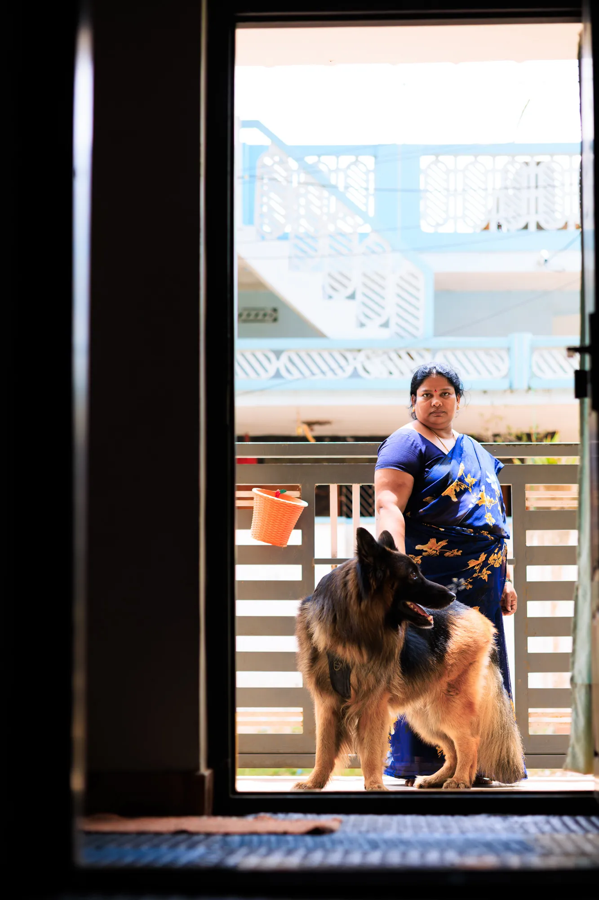

PHOTOGRAPHY · STORIES · PEOPLE
Every frame
has a feeling.
I’m Bhanoday — a photographer drawn to honest portraits, natural light, and the little details that make a moment yours.
Based in Andhra Pradesh · Available for shoots

SELECTED WORK01 — 04
PORTRAITS ✳ CANDID MOMENTS ✳ CREATIVE STORIES ✳ PORTRAITS
A FEW FAVOURITES
Frames worth
remembering.
BEHIND THE CAMERA
Photography, as
I see the world.
For me, photography is less about perfect poses and more about how a moment feels. I look for natural expressions, meaningful light and images that still feel alive years later.
A little about me